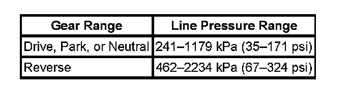

Line Pressure Check Procedure
Line Pressure Check
Tools Required
J 21867 Pressure Gage
Line pressures are calibrated for two sets of gear ranges-Drive-Park-Neutral, and Reverse. This allows the transmission line pressure to be appropriate for different pressure needs in different gear ranges:

Before performing a line pressure check, verify that the pressure control solenoid for the transmission is receiving the correct electrical signal from the vehicle computer:
1. Install a scan tool.
Caution: Keep the brakes applied at all times in order to prevent unexpected vehicle motion. Personal injury may result if the vehicle moves unexpectedly.
Important: The transmission may experience harsh, soft or mushy shifts for up to two days later.
2. Start the engine and set the parking brake.
3. Check for diagnostic trouble codes, including the diagnostic code for a pressure control solenoid.
4. Repair the vehicle if necessary. Include the following areas:
^ Inspect the fluid level.
^ Inspect the manual linkage at the transmission.
^ Install or connect the scan tool.
^ Install or connect the J 21867 at the line pressure tap.
5. Put the gear selector in PARK and set the parking brake.
6. Start the engine and allow the engine to warm up at idle.
7. Access the Override Pressure Control Solenoid test on the scan tool.
8. Increase the Pressure Control Solenoid Current in 0.1 amp increments. Read the corresponding line pressure on the J 21867. Allow the pressure to stabilize for 5 seconds after each current change.
9. Compare your data to the Drive-Park-Neutral Line Pressure.
10. Remove the J 21867.
Important: Be sure to apply pipe thread sealant with Teflon GM P/N 12346004 (Canadian P/N 10953480) to the line pressure plug.
11. Install the line pressure tap plug.
If your pressure readings differ greatly from the line pressure table, refer to the Diagnostic Tables.
The scan tool is only able to control the pressure control solenoid in PARK and NEUTRAL with the vehicle stopped at idle. This protects the clutches from extremely high or low pressures in DRIVE or REVERSE ranges.